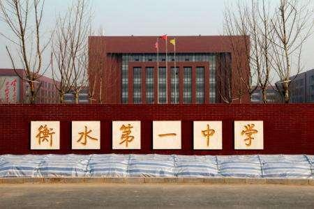
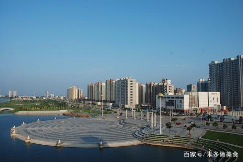
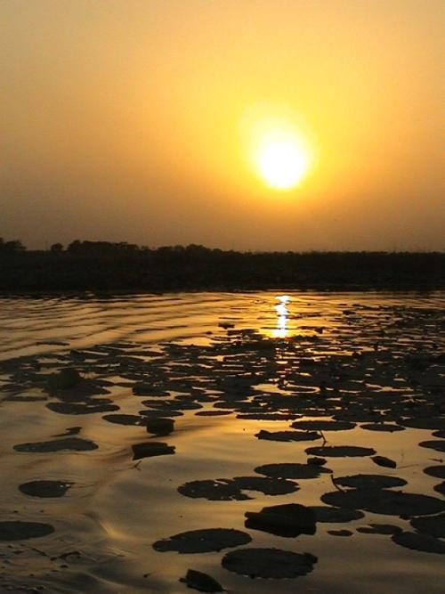
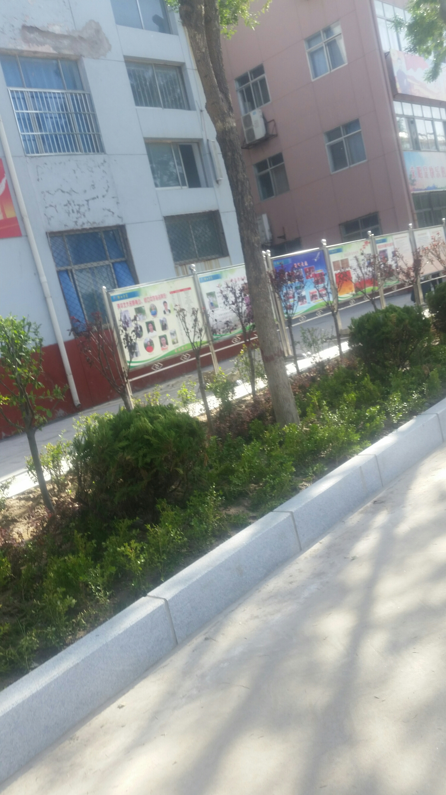

[héng shuǐ]
衡水
简介:
衡水
简介:
衡水，河北省地级市，位于河北省东南部，介于东经115°10′-116°34′，北纬37°03′-38°23′之间，东部与沧州市和山东省德州市毗邻，西部与石家庄市接壤，南部与邢台市相连，北部同保定市和沧州市交界，总面积8815平方公里。衡水市地处河北冲积平原，地势自西南向东北缓慢倾斜，海拔高度12米～30米。属大陆季风气候区，为温暖半干旱型，是京津重要的农副产品加工供应基地。衡水属于环渤海经济圈和首都经济圈的“1+9+3”计划京南区，为环渤海区域合作市长联席会议成员市，被费孝通称为“黄金十字交叉处”。
2019年7月5日，中华人民共和国生态环境部公布了2019年统筹强化监督（第一阶段）黑臭水体专项排查情况，衡水被列入“黑臭水体消除比例低于80%的城市名单”，消除比例为66.7%。2019年8月13日，入选全国城市医疗联合体建设试点城市。


景点:
说道景点，也就衡水湖能拿出来讲一下了。衡水湖坐落在河北省衡水市桃城区、冀州两县区境内，是国家AAAA级旅游景区，也是华北平原惟一保持沼泽、水域、滩涂、草甸和森林等完整湿地生态系统的自然保护区，占地面积283平方公里。
衡水中学也算是衡水的一大景点吧。说道衡水，估计很多人首先想到的就是衡中。唉，这个学校怎么样大家应该都知道，我就不介绍了……


